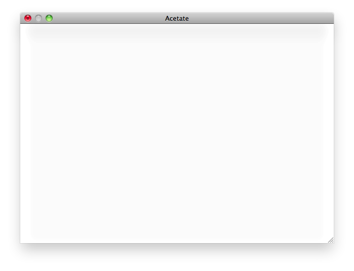
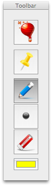
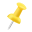
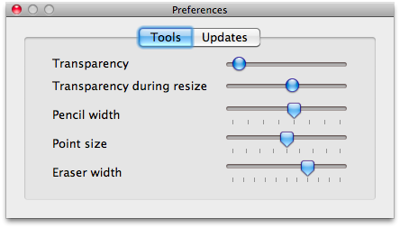

Acetate is a tool for Mac OS X 10.6 (Snow Leopard) written for animators to track arcs and joints while animating by simulating a layer of Acetate attached to the screen. It includes a simple set of drawing tools that allow a user to draw over the top of any application. Other uses include annotating presentations, or analyzing movement in a video. Or just doodling.
When you start Acetate you will see a semi-transparent window which is your drawing area.

Alongside that is a toolbar panel that looks like this:

which contains the following tools:
| Toggling this on will set Acetate to float above other windows. | |
|  | Toggling this on will set Acetate to be pinned so that you don't accidentally move the window. |
| The pencil tool allows you to draw lines and curves. | |
| The point tool allows you to place circular points. | |
| The eraser allows you to erase all or part of your hard work. | |
| The color selector allows you to, well, select the color of your lines or points |

Each slider in the Tools panel of the Preferences window allows you to fine-tune Acetate in the following ways:
| Transparency | Adjusts the transparency of the Main Window. |
|---|---|
| Transparency during resize | Adjusts the transparency of the Main Window while the window is being resized. |
| Pencil width | Adjusts the width of the line drawn by the pencil tool. |
| Point size | Adjusts the size of the points drawn by the point tool. |
| Eraser width | Adjusts the width of the eraser tool. |